실내건축기사(구) (2017-03-05 기출문제)
1과목: 실내디자인론
1. 다음 중 인간과 실내환경의 이론 중 형태학을 가장 올바르게 설명한 것은?
- 인간 신체의 해부학적 특성을 디자인에 적용시키기위한 연구
- 인간의 시각, 청각, 촉각적 특징을 디자인에 적용시키기 위한 연구
- 환경에서 인간의 잠재적 심리상태를 패턴화하여 디자인에 적용시키기 위한 연구
- 인간의 지각, 심리, 행동의 특질을 패턴화하여 디자인에 적용시키기 위한 연구
(정답률: 79%)

2. 균형의 원리에 관한 설명으로 옳지 않은 것은?
- 크기가 큰 것이 작은 것보다 시각적 중량감이 크다.
- 기하학적 형태가 불규칙적인 형태보다 시각적 중량감이 크다.
- 색의 중량감은 색의 속성 중 특히 명도, 채도에 따라 크게 작용한다.
- 복잡하고 거친 질감이 단순하고 부드러운 질감보다 시각적 중량감이 크다.
(정답률: 78%)
3. 다음 설명에 알맞은 조명의 연출기법은?
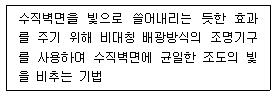
- 강조(high lighting) 기법
- 글레이징(glazing) 기법
- 월워싱(wall washing) 기법
- 빔 플레이(beam play) 기법
(정답률: 85%)
4. 공간의 차단적 구획방법에 속하지 않는 것은?
- 커튼
- 열주
- 조명
- 유리창
(정답률: 77%)
5. 주택 부엌에서 작업삼각형(Work Triangle)의 꼭지점에 해당하지 않는 것은?
- 냉장고
- 가열대
- 배선대
- 개수대
(정답률: 80%)
6. 사무소 건축에서 유효율(rentable ratio)의 의미로 알맞은 것은?
- 연면적에 대한 대실면적의 비율
- 연면적에 대한 건축면적의 비율
- 대지면적에 대한 바닥면적의 비율
- 대지면적에 대한 건축면적의 비율
(정답률: 59%)
7. 형태의 지각심리 중 불완전한 형을 사람들에게 순간적으로 보여줄 때 이를 완전한 형으로 지각한다는 사실과 관련된 것은?
- 근접성
- 유사성
- 연속성
- 폐쇄성
(정답률: 73%)
8. 펜로즈의 삼각형에서 나타나는 착시의 유형은?
- 거리의 착시
- 크기의 착시
- 역리도형 착시
- 다의도형 착시
(정답률: 69%)
9. VMD(visual merchandising)의 구성에 속하지 않는 것은?
- IP
- PP
- VP
- POP
(정답률: 83%)
10. 현장감을 실감나게 표현하는 방법으로 하나의 사실 또는 주제의 시간 상황을 고정시켜 연출하는 것으로 현장에 임한 느낌을 주는 특수 전시기법은?
- 영상전시
- 디오라마전시
- 아일랜드전시
- 하모니카전시
(정답률: 81%)
11. 날개의 각도를 조절하여 일광, 조망 그리고 시각의 차단 정도를 조정하는 수평형 블라인드는?
- 롤 블라인드
- 로만 블라인드
- 버티컬 블라인드
- 베네시안 블라인드
(정답률: 61%)
12. 천창을 건축에 사용했을 때 장점으로 옳지 않은 것은?
- 건축계획의 자유도가 증가한다.
- 비막이 및 유지보수가 용이하다.
- 벽면을 더욱 다양하게 활용할 수 있다.
- 밀집된 건물에 둘러싸여 있어도 일정량의 채광을 확보할 수 있다.
(정답률: 82%)
13. 주거공간을 주행동에 따라 개인공간, 작업공간, 사회적 공간으로 분류할 경우, 다음 중 작업공간에 속하는 것은?
- 서재
- 침실
- 응접실
- 다용도실
(정답률: 67%)
14. 다음 중 실내디자인의 개념과 가장 거리가 먼 것은?
- 순수예술
- 실행과정
- 전문과정
- 디자인 활동
(정답률: 81%)
15. 휴먼스케일(Human Scale)에 관한 설명으로 옳지 않은 것은?
- 휴먼스케일은 실내 공간계획에만 국부적으로 적용된다.
- 휴먼스케일은 인간의 신체를 기준으로 파악, 측정되는 척도 기준이다.
- 휴먼스케일이 적절히 적용된 공간은 안정되고 안락감을 주는 환경이 된다.
- 휴먼스케일은 인간을 기준으로 계산하여 공간에 대해 감각적으로 가장 쾌적한 비율이다.
(정답률: 88%)
16. 단독주택의 부엌에 관한 설명으로 옳은 것은?
- 작업대의 배치유형 중 일렬형은 대규모 부엌에 가장 적당하다.
- 일반적으로 부엌의 크기는 주택 연면적의 3% 정도가 가장 적당하다.
- 일반적으로 작업대의 높이는 500~600mm, 깊이는 750~800mm가 적당하다.
- 작업대는 일반적으로 준비대→개수대→조리대→가열대→배선대 순서로 배치한다.
(정답률: 78%)
17. 조명의 배광방식에 관한 설명으로 옳지 않은 것은?
- 반간접조명은 조도가 균일하고 은은하며 전반확산조명이라고도 한다.
- 직접조명은 경제적이지만 눈부심 현상과 강한 그림자가 생기는 단점이 있다.
- 간접조명은 상향광속이 90~100%로, 반사광으로 조도를 구하는 조명방식이다.
- 반직접조명은 마감재의 반사율에 의해 밝기의 정도가 영향을 받게 되므로 마감재의 질감과 색채 등을 고려한다.
(정답률: 56%)
18. 주택의 침실계획에 관한 설명으로 옳지 않은 것은?
- 침대의 측면을 외벽에 붙이는 것이 이상적이다.
- 침대에 누운 채로 출입문이 보이도록 하는 것이 좋다.
- 침실의 출입문은 안여닫이로 하는 것이 좋다.
- 침대 하부(머리부분의 반대편)쪽에는 통행에 불편하지 않도록 여유공간을 두는 것이 좋다.
(정답률: 74%)
19. 상품의 유효진열범위로서 골든 스페이스(golden space)라고 불리는 높이는?
- 300~750mm
- 600~900mm
- 850~1250mm
- 900~1400mm
(정답률: 85%)
20. 실내공간을 형성하는 기본요소로 공간을 구성하는 수직적 요소는?
- 벽
- 보
- 천장
- 바닥
(정답률: 87%)
2과목: 색채학
21. 동시 대비 중 무채색과 유채색 사이에 일어나지 않는 대비는?
- 명도 대비
- 색상 대비
- 채도 대비
- 보색 대비
(정답률: 45%)
22. 빛의 파장 단위로 사용되는 nm(nanometer)의 단위를 올바르게 나타낸 것은?
- 1nm = 1/1만 mm
- 1nm = 1/10만 mm
- 1nm = 1/100만 mm
- 1nm = 1/1000만 mm
(정답률: 68%)
23. 모자이크, 직물 등의 병치혼합에 특징이 아닌 것은?
- 회전혼합과 같은 평균혼합이다.
- 중간혼색으로 가법혼색에 속한다.
- 채도가 낮아지는 상태에서 중간색을 얻을 수 있다.
- 병치혼합 원리를 이용한 효과를 ‘배졸드효과(Bezold effect)’라고 한다.
(정답률: 47%)
24. NCS 색체계에 대한 설명이 옳은 것은?
- 독일 색체 연구소에서 만들어졌다.
- NCS 표기법은 미국에서 많이 사용되고 있다.
- 기본적인 색은 Y, R, G의 3색이다.
- 헤링의 4원색 이론을 바탕으로 한다.
(정답률: 65%)
25. 조명에 의하여 물체의 색을 결정하는 광원의 성질은?
- 조명성
- 기능성
- 연색성
- 조색성
(정답률: 78%)
26. 맵핑의 방향에 따른 분류 방법이 아닌 것은?
- 명도 볼편 클립핑 방법
- 명도의 중심 점 클립핑 방법
- 돌출 점 클립핑 방법
- 최장 거리 클립핑 방법
(정답률: 51%)
27. 음성적 잔상이란?
- 원래의 감각과 반대의 밝기 또는 색상을 가지는 잔상
- 원래의 감각과 같은 질의 밝기 또는 색상을 가지는 잔상
- 원래의 색상과 다른 무채색으로 나타나는 잔상
- 원래색상의 밝기 또는 색상이 약하게 나타나는 잔상
(정답률: 71%)
28. 다음 색에 관한 설명 중 틀린 것은?
- 푸르킨예 현상이란 명소시에서 암소시로 바뀔 때 단파장에 대한 효율이 높아지는 것이다.
- 적록색맹이란 적색과 녹색을 식별할 수 없는 색각 이상자를 말한다.
- 색약은 채도가 낮은 색과 밝은데서 보이는 색은 이상 없으나 채도가 높고 원거리의 색을 분별하는 능력이 부족한 것을 말한다.
- 색맹이란 색을 지각하는 추상체의 결함으로 색을 분별하지 못하는 것을 말한다.
(정답률: 63%)
29. 배색된 색채들이 서로 공통되는 상태와 속성을 가질 때, 즉 유사(類似)의 원리가 있을 때 그 색채들은 조화가 된다. 다음 중 유사의 원리에 의하여 조화가 되는 것은?
- 노랑-주황
- 노랑-빨강
- 노랑-보라
- 노랑-파랑
(정답률: 85%)
30. 다음 중 ‘박하색’과 관련이 없는 이름이나 기호는 무엇인가?
- Mint
- 2.5PB 9/2
- 흰 파랑
- Indigo blue
(정답률: 75%)
31. KS(한국산업표준) 규격에서 정한 노랑의 색상범위는 무엇인가?
- 5R-10YR
- 2.5Y-10GY
- 10YR-7.5Y
- 10Y-2.5GY
(정답률: 59%)
32. 다음은 가법혼색(색광)의 3원색을 나타낸 것이다. 빈칸 A, B, C 순서대로 맞게 나열한 것은?
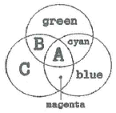
- A : white B : yellow C : red
- A : white B : red C : yellow
- A : black B : yellow C : red
- A : black B : red C : yellow
(정답률: 73%)
33. 공장 안에서 통행에 충돌 위험이 있는 기둥은 무슨색으로 처리하는 것이 안전색채에 적절한가?
- 빨강
- 노랑
- 파랑
- 초록
(정답률: 75%)
34. 저드(D. B. Judd)의 색채 조화론에서 ‘친근성의 원리’를 옳게 설명한 것은?
- 공통점이나 속성이 비슷한 색은 조화된다.
- 자연계의 색으로 쉽게 접하는 색은 조화된다.
- 규칙적으로 선택된 색들끼리 잘 조화된다.
- 색의 속성차이가 분명할 때 조화된다.
(정답률: 58%)
35. 컬러 매니지먼트의 필요조건으로 적합한 것은?
- 컬러 매니지먼트 시스템은 복잡해도 전문가는 쉽게 이용할 수 있도록 해야 한다.
- 처리속도는 중요하지 않다.
- 컬러로 된 그래픽의 작성이나 화상의 준비에 각종 프로그램과의 호환성을 필요로 한다.
- 컬러 매니지먼트에 필요한 데이터를 사용자 자신이 입력할 수는 없다.
(정답률: 79%)
36. 그림과 같이 9개의 검정 정사각형 사이의 교차되는 흰 부분에 약간 희미한 점이 나타나 보이는 착각이 일어난다. 이와 같은 현상은?
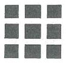
- 한난대비
- 채도대비
- 계시대비
- 연변대비
(정답률: 58%)
37. 오스트발트 표색기호 중 가장 강한 색상 대비가 느껴지는 조화는?
- 4ie - 12ie
- 3ne - 21ne
- 1na - 21na
- 14na - 17na
(정답률: 56%)
38. 다음 중 색의 채도가 가장 높은 색상은?
- 5R 4/14
- 5G 5/8
- 5B 6/6
- 5P 3/10
(정답률: 80%)
39. 병치혼합은 다음 중 어떤 화가의 작품에서 주로 사용되었는가?
- 피카소
- 뭉크
- 달리
- 쇠라
(정답률: 69%)
40. 광원의 온도가 높아짐에 따라 광원의 색이 변한다. 색온도 변화의 순으로 옳게 짝지어진 것은?
- 빨간색 → 주황색 → 노란색 → 파란색 → 흰색
- 빨간색 → 주황색 → 노란색 → 흰색 → 파란색
- 빨간색 → 주황색 → 파란색 → 보라색 → 흰색
- 빨간색 → 주황색 → 노란색 → 파란색 → 보라색
(정답률: 64%)
3과목: 인간공학
41. 망막이 자극을 받은 다음에도 시신경이 흥분하여 남아 있는 상태는?
- 잔상
- 이중상
- 착시 현상
- 누가(summation)작용
(정답률: 85%)
42. 손잡이에 대한 일반적인 설명으로 맞는 것은?
- 손잡이의 치수는 조작에 필요한 힘의 크기와 관련이 없다.
- 작업용도에 따라 손잡이의 모양을 고려하여 설계하여 야 한다.
- 서랍의 손잡이는 재질의 차이에 따른 치수를 고려할 필요가 없다.
- 조작력은 적으나 정밀한 눈금을 맞출 때에는 가급적 손잡이의 크기를 크게 한다.
(정답률: 80%)
43. 그림과 같이 a와 b의 길이는 동일하나 b가 a보다 더 길게 보이는 현상을 무엇이라 하는가?
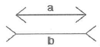
- 죌러(Zöler)의 착시(방향착오)
- 헤링(Hering)의 착시(분할착오)
- 포겐도르프(Poggendorf)의 착시(위치착오)
- 뮬러-라이어(Müer-Lyer)의 착시(동화착오)
(정답률: 63%)
44. 생체리듬에 관한 설명으로 맞는 것은?
- 감성적 리듬(Sensitivity rhythm)은 23일의 반복주기를 갖는다.
- 육체적 리듬(Physical rhythm)은 33일의 반복주기를 갖는다.
- 위험일은 각각의 리듬이 (-)에서 (+)로, 또는 (+)에서 (-)로 변화하는 점을 의미한다.
- 지성적 리듬(Intellectual rhythm)은 주의력, 창조력, 예감 및 통찰력 등을 좌우한다.
(정답률: 63%)
45. 다음 그림에 나타나는 착시 현상은?
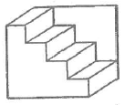
- 반전 착시
- 각도의 착시
- 만곡 착시
- 대소의 착시
(정답률: 59%)
46. 양립성의 종류가 아닌 것은?
- 운동 양립성
- 공간적 양립성
- 개념적 양립성
- 시간적 양립성
(정답률: 65%)
47. 작업자의 자세에 관해 일반적으로 고려해야 될 사항이 아닌 것은?
- 자연스러운 자세를 취한다.
- 작업자가 힘을 적용하는데 효율적이 되도록 한다.
- 작업자가 반복적인 작업을 효율적이게 할 수 있게 한다.
- 작업자의 반동 효과를 최대로 하기 위해 작업자 신체 지탱물을 간소화한다.
(정답률: 84%)
48. 반사율(%)을 구하는 식으로 맞는 것은?
- 휘도/조도
- 조도/광도
- 광량/거리2
- 조도/거리2
(정답률: 54%)
49. 인간공학적 부품 배치의 원칙이 아닌 것은?
- 중요성의 원칙
- 사용빈도의 원칙
- 가격별 배치의 원칙
- 기능별 배치의 원칙
(정답률: 82%)
50. 조정-반응 비율(C/R 비)에 대한 설명으로 틀린 것은?
- 조종장치의 움직이는 거리와 표시장치상의 이동거리의 비이다.
- C/R 비가 작으면 미세조정이 어려우나 조종시간은 짧아진다.
- 최적의 C/R 비는 일반적인 공식으로 도출하기 어려우므로 실험에 의하여 구한다.
- 회전조종장치(knob)의 경우 C/R 비는 손잡이 1회전에 상당하는 표시장치 이동거리의 역수이다.
(정답률: 66%)
51. 호흡기계에 관한 설명으로 틀린 것은?
- 폐포는 허파 안에서 기체가 교환될 수 있도록 넓은 표면적을 제공한다.
- 호흡기계는 산소를 공급하고, 이사화탄소를 제거하는 일을 수행한다.
- 허파에서 공기와 혈액 사이의 기체교환을 외호흡이라한다.
- 호흡기계는 비강, 인두, 후두, 식도, 입 등 공기가 접촉되는 기관들을 모두 포함한다.
(정답률: 52%)
52. 인간공학이라는 뜻으로 사용된 어고노믹스(Ergonomics)의 어원에 관한 설명으로 틀린 것은?
- 인체의 법칙을 의미한다.
- 작업의 경제적 설계를 의미한다.
- 인간을 중심으로 작업을 관리함을 의미한다.
- 인간과 작업환경 사이의 생리 및 심리현상에 관하여 연구한다.
(정답률: 50%)
53. 광원으로부터의 직사 휘광(glare)을 처리하는 방법으로 적절하지 않은 것은?
- 광원의 휘도를 줄이고, 수를 늘린다.
- 광원을 시선에서 되도록 가깝게 한다.
- 가리개(shield), 갓(hood) 등을 사용한다.
- 휘광원 주위를 밝게 하여 광도비를 줄인다.
(정답률: 78%)
54. 인간과 기계의 기능을 비교한 설명으로 틀린 것은?
- 단순 반복적인 작업은 기계에 적합하다.
- 장기간에 걸친 작업수행은 인간이 더 적합하다.
- 신속하고, 일관성 있는 작업은 기계가 인간보다 우수하다.
- 예기치 못한 사건에 대한 감지 및 대응은 인간이 더 유리하다.
(정답률: 80%)
55. 의자 좌면의 너비를 결정하는데 가장 적합한 규격은?
- 사용자의 평균 엉덩이 너비에 맞도록 규격을 정한다.
- 사용자의 중위수(median) 엉덩이 너비에 맞도록 규격을 정한다.
- 사용자의 5 퍼센타일(percentile) 엉덩이 너비에 맞도록 규격을 정한다.
- 사용자의 95 퍼센타일(percentile) 엉덩이 너비에 맞도록 규격을 정한다.
(정답률: 63%)
56. 신체 부위의 운동 동작에서 몸의 중심선으로부터 멀어지는 이동을 의미하는 것은?
- 굴곡(flexion)
- 신전(extension)
- 외전(abduction)
- 내전(adduction)
(정답률: 72%)
57. 근육이 동적 작업을 시행하고 있을 때의 정상적인 혈액관계를 보여주는 그림으로 맞는 것은?
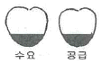
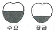
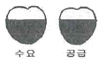
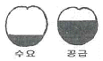
(정답률: 68%)
58. 웨버(Weber)의 법칙에 관한 설명으로 틀린 것은?
- 한계효용체감의 법칙과 동일한 의미이다.
- I 를 기준자극, ΔI를 변화감지역(JND)이라 하면 “ΔI/I=상수”로 일정하다.
- 동일한 양의 인식증가를 얻기 위해서 자극은 선형적으로 증가하여야 한다.
- 기준자극이 커질수록 동일한 크기의 자극을 얻기 위해서는 더 강한 자극을 주어야 한다.
(정답률: 54%)
59. 피부 감각의 특성에 관한 설명으로 틀린 것은?
- 촉각을 가지고 있다.
- 뇌는 통각을 가지고 있다.
- 통각, 압각, 온각, 냉각을 가지고 있다.
- 같은 크기의 자극이 반복되면 적응된다.
(정답률: 74%)
60. 영상표시단말기(Visual Display Terminal)를 취급하는 작업장에서 단말기의 바탕 색상이 검정색 계통인 경우 주변 환경의 조도(Lux)로 가장 적절한 것은?
- 100~300
- 300~500
- 500~700
- 700~1000
(정답률: 61%)
4과목: 건축재료
61. 유리의 종류에 따른 용도를 표기한 것으로 옳지 않은 것은?
- 강화유리 - 내충격용
- 복층유리 - 보온 및 방음
- 망입유리 - 방화 및 방범용
- 형판유리 - 진열창, 거울
(정답률: 68%)
62. 건축용 세라믹 재료의 특성에 관한 설명으로 옳지 않은 것은?
- 토기 : 흡수율이 높고 강도가 약하다.
- 도기 : 회색이나 백색의 색상을 가지고 있으며 가볍다.
- 석기 : 소성 후 밝은 백색이 되며, 강도가 크고 유약으로 다양한 색상을 낼 수 있다.
- 자기 : 흡수성이 거의 없고 매우 높은 강도를 가지고 있다.
(정답률: 77%)
63. 직경이 18mm인 강봉을 대상으로 인장시험을 행하여 항복하중 27kN, 최대하중 41kN을 얻었다. 이 강봉의 인장강도는?
- 약 106.3MPa
- 약 133.9MPa
- 약 161.1MPa
- 약 182.3MPa
(정답률: 40%)
64. 2개의 목재를 접합할 때 두 부재사이에 끼워 볼트와 병용하여 전단력에 저항하도록 한 철물은?
- 띠쇠
- 감잡이쇠
- 꺾쇠
- 듀벨
(정답률: 73%)
65. 구조용 강재의 응력도-변형률 곡선에서 가장 먼저 나타나는 것은?
- 상위항복점
- 비례한계점
- 하위항복점
- 인장강도점
(정답률: 65%)
66. 다공질 벽돌에 관한 설명으로 옳지 않은 것은?
- 살 두께가 매우 얇고 벽돌 속이 비어 있는 구조로 중공벽돌이라고도 한다.
- 점토에 톱밥, 겨, 탄가루 등을 30~50% 정도 혼합, 소성하여 제조된다.
- 방음, 흡음성이 좋으나 강도가 약해 구조용으로는 사용이 불가능하다.
- 절단, 못치기 등의 가공성이 우수하다.
(정답률: 58%)
67. 시멘트계 섬유판류에 관한 설명으로 옳지 않은 것은?
- 치수의 정밀도는 높지만 가공은 어렵다.
- 부식이 없고 충해를 받지 않는다.
- 비교적 가볍고 방화성능이 있다.
- 단열성과 흡음성이 있다.
(정답률: 55%)
68. 수밀콘크리트를 사용하는 목적으로 옳은 것은?
- 콘크리트의 초기 강도를 높이기 위해서
- 콘크리트의 방수를 위해서
- 낮은 온도에서 작업하기 위해서
- 높은 온도에서 작업하기 위해서
(정답률: 61%)
69. 도료에 관한 설명으로 옳지 않은 것은?
- 유성페인트 - 건조시간이 길고 내알칼리성이 떨어진다.
- 수성페인트 - 광택이 매우 우수하고 내마모성이 크다.
- 수지성페인트 - 내산, 내알칼리성이 우수하다.
- 알루미늄페인트 - 분리가 적고 솔질이 용이하다.
(정답률: 64%)
70. 골재의 실적률에 관한 설명으로 옳지 않은 것은?
- 실적률은 골재 입형의 양부를 평가하는 지표이다.
- 부순 자갈의 실적률은 그 입형 때문에 강자갈의 실적률보다 적다.
- 실적률 산정 시 골재의 밀도는 절대건조 상태의 밀도를 말한다.
- 골재의 단위용적질량이 동일하면 골재의 밀도가 클수록 실적률도 크다.
(정답률: 37%)
71. 다음 중 수경성 미장재료에 해당되는 것은?
- 석고 플라스터
- 돌로마이트 플라스터
- 소석회
- 회반죽
(정답률: 65%)
72. 대형타일에 주로 사용되며 표면을 연마하여 고광택을 유지하도록 만든 것은?
- 스크래치타일
- 논슬립타일
- 폴리싱타일
- 모자이크타일
(정답률: 78%)
73. 소석회에 모래 ㆍ 해초풀 ㆍ 여물 등을 혼합하여 바르는 미장 공법은?
- 리신 바름
- 회반죽 바름
- 인조석 바름
- 돌로마이트 플라스터 바름
(정답률: 73%)
74. 세계 각국에서 제정한 공업규격의 명칭을 나타낸 것으로 옳지 않은 것은?
- KS - 한국
- JIS - 일본
- DIN - 덴마크
- BS - 영국
(정답률: 70%)
75. 온도에 대한 감수성 및 신도가 적어 지붕의 방수공사에 가장 적합한 아스팔트는?
- 블로운 아스팔트
- 천연아스팔트
- 피치
- 스트레이트 아스팔트
(정답률: 65%)
76. 포틀랜드 시멘트의 화학성분 중 가장 많은 부분을 차지하는 성분은?
- 석회(CaO)
- 실리카(SiO2)
- 알루미리(Al2O3)
- 산화철(Fe2O3)
(정답률: 63%)
77. 방탄유리의 구성과 가장 관련이 깊은 유리는?
- 에칭유리
- 복층유리
- 접합유리
- 스팬드럴유리
(정답률: 54%)
78. 목재에 관한 설명으로 옳지 않은 것은?
- 타 재료에 비해 비강도가 큰 편이다.
- 섬유직각방향에 비해 섬유평행방향의 강도가 크다.
- 섬유포화점 이상의 상태에서는 함수율의 증감에 따라 수축 및 팽창이 발생하지 않는다.
- 인장강도에 비해 압축강도가 크고 산성, 약품 및 염분 등에 대한 저항력이 크다.
(정답률: 63%)
79. 보통 판유리의 일반적 성질에 관한 설명으로 옳지 않은 것은?
- 비중은 2.5 정도이다.
- 보통 판유리의 강도는 인장강도를 말한다.
- 열전도율이 콘크리트보다 작다.
- 연화점은 720℃~730℃ 정도이다.
(정답률: 60%)
80. 유용성 수지를 건성유에 가열 ㆍ 용해하여 이것을 휘발성 용제로 희석한 것은?
- 보일유
- 유성 페인트
- 유성 바니시
- 수성 페인트
(정답률: 71%)
5과목: 건축일반
81. 문화 및 집회시설(전시장 및 동 ㆍ 식물원 제외) 용도에 쓰이는 건축물의 관람석 또는 집회실의 바닥면적이 200m2 이상인 경우 반자의 높이는 최소 얼마 이상인가?
- 2.1m
- 2.7m
- 3.6m
- 4.0m
(정답률: 64%)
82. 프리스트레스하지 않는 부재의 현장치기 콘크리트로서 옥외의 공기나 흙에 직접 접하지 않는 슬래브의 경우 최소 피복두께는? (단, D35를 초과하는 철근의 경우)
- 20mm
- 40mm
- 60mm
- 80mm
(정답률: 60%)
83. 다음은 건축법상 지하층과 피난층 사이의 개방공간 설치에 관한 사항이다. 다음 ( ) 안에 알맞은 것은?
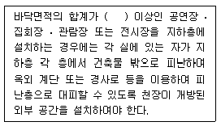
- 1000m2
- 2000m2
- 3000m2
- 5000m2
(정답률: 59%)
84. 화재예방, 소방시설 설치 ㆍ 유지 및 안전관리에 관한 법령에 따라 화재안전정책에 관한 기본계획을 계획 시행전년도 8월31일까지 관계 중앙행정기관의 장과 협의를 거쳐 전년도 9월30일까지 수립하여야 하는 자는?(관련 규정 개정전 문제로 여기서는 기존 정답인 1번을 누르면 정답 처리됩니다. 자세한 내용은 해설을 참고하세요.)
- 국민안전처장관
- 시 ㆍ 도지사
- 소방본부장 또는 소방서장
- 국무총리
(정답률: 57%)
85. 르 꼬르뷔지에(Le Corbusier)의 스승으로서 구조의 대가이며 평지붕, 옥상정원을 그의 프랭클린가의 저택에서 설계했던 건축가는?
- 토니 가르니에(Tony Garnier)
- 어거스트 페레(August Perret)
- 피레 쟌네레(Pirre Janneret)
- 오쟝팡(A.Ozeafaut)
(정답률: 59%)
86. 철골조의 보의 종류 중 웨브에 철판을 쓰고 상하부 플랜지에 ㄱ형강을 리벳 접합한 보는?
- 격자보
- 트러스보
- 판보
- 래티스보
(정답률: 38%)
87. 평지로 된 대지에 상점의 용도로 사용되는 지상6층 인 건축물의 피난층에 설치하는 바깥쪽으로의 출구 유효너비의 합계는 최소 얼마 이상으로 하여야 하는가? (단, 각 층의 바닥면적은 1층과 2층은 각각 1000m2이고, 3층부터 6층까지는 각각 1500m2이다.)
- 6m
- 9m
- 12m
- 36m
(정답률: 52%)
88. 다음 중 승용승강기를 설치하여야 하는 건축물에서 승용승강기 설치대수의 기준이 되는 것은?
- 건축면적
- 연면적
- 6층 이상의 바닥면적의 합계
- 6층 이상의 거실면적의 합계
(정답률: 53%)
89. 소방시설의 종류에 따른 설비의 명칭으로 옳은 것은?
- 경보설비 : 무선통신보조설비
- 소화활동설비 : 유도등 및 유도표지
- 소화설비 : 옥외소화전설비
- 소화용수설비 : 연결살수설비
(정답률: 51%)
90. 보강 블록조에서 내력벽 길이의 총합계가 45m이고, 그 층의 건물면적이 300m2일 경우 내력벽의 벽량은?
- 10cm/m2
- 15cm/m2
- 30cm/m2
- 45cm/m2
(정답률: 65%)
91. 옥내소화전설비를 설치하여야 하는 특정소방 대상물 의 설치기준 중 옳은 것은? (단, 지하가 중 터널)
- 길이가 500m 이상인 터널
- 길이가 1000m 이상인 터널
- 길이가 1500m 이상인 터널
- 길이가 2000m 이상인 터널
(정답률: 49%)
92. 비상경보설비설치를 하여야 할 특정소방대상물의 기준으로 옳지 않은 것은?
- 무창층의 바닥면적이 200m2 이상인 것
- 지하층의 바닥면적이 150m2 이상인 것
- 50명 이상의 근로자가 작업하는 옥내 작업장
- 지하가 중 터널로서 길이가 500m 이상인 것
(정답률: 37%)
93. 특정소방대상물에 설치하여야 하는 소방시설과 이를 면제할 수 있는 유사 소방시설의 연결이 옳지 않은 것은?
- 연소방지설비 - 비상방송설비
- 비상조명등 - 피난구유도등
- 비상경보설비 - 단독경보형감지기
- 스프링클러설비 - 물분무등소화설비
(정답률: 73%)
94. 바닥면적이 300m2 이상인 공연장의 개별관람석 출구의 설치기준으로 옳지 않은 것은?
- 출구는 관람석별 2개소 이상 설치해야 한다.
- 관람석으로부터 바깥쪽으로의 출구로 쓰이는 문은 안여닫이로 하여야 한다.
- 각 출구의 유효너비는 1.5m 이상으로 하여야 한다.
- 개별관람석 출구의 유효너비의 합계는 개별관람석의 바닥면적 100m2마다 0.6m의 비율로 산정한 너비 이상으로 한다.
(정답률: 70%)
95. 건축허가 등을 할 때 미리 소방본부장 또는 소방서장의 동의를 받아야 하는 건축물 등의 범위(기준)로 옳지 않은 것은?
- 연면적이 250m2 이상인 정신의료기관
- 연면적이 200m2 이상인 노유자시설
- 연면적이 200m2 이상인 수련시설
- 연면적이 300m2 이상인 장애인 의료재활시설
(정답률: 52%)
96. 다음 중 거실의 용도에 따른 조도 기준이 가장 높은 것은?
- 독서
- 일반 사무
- 제도
- 회의
(정답률: 72%)
97. 휨을 받는 목조부재에 구조적으로 가장 적절한 이음의 유형은?
- 주먹장 이음
- 메뚜기장 이음
- 엇걸이 이음
- 빗 이음
(정답률: 53%)
98. 한국의 전통건축에서 주두의 일반적인 기능과 가장 거리가 먼 것은?
- 구조적 불안정의 교정
- 조형미의 교정
- 시각적 불안감의 교정
- 권위성의 교정
(정답률: 67%)
99. 건축물에 설치하는 지하층의 비상탈출구에 관한 기준으로 옳지 않은 것은?
- 비상탈출구에서 피난층 또는 지상으로 통하는 복도나 직통계단까지 이르는 피난통로의 유효너비는 최소 0.9m 이상으로 할 것
- 비상탈출구의 문은 피난방향으로 열리도록 할 것
- 비상탈출구는 출입구로부터 3m 이상 떨어진 곳에 설치할 것
- 비상탈출구의 유효너비는 0.75m 이상으로 하고, 유효 높이는 1.5m 이상으로 할 것
(정답률: 38%)
100. 특급 소방안전관리대상물에 두어야 할 소방안전관리자의 선임대상자가 되기 위한 기준으로 옳지 않은 것은?
- 소방기술사
- 5년 이상 1급 소방안전관리대상물의 소방안전관리자로 근무한 실무경력이 있고, 국민안전처장관이 실시하는 특급 소방안전관리대상물의 소방안전관리에 관한시험에 합격한 사람
- 소방공무원으로 15년 이상 근무한 경력이 있는 자
- 소방설비기사의 자격을 취득한 후 5년 이상 1급 소방안전관리대상물의 소방안전관리자로 근무한 실무경력이 있는 사람
(정답률: 75%)
6과목: 건축환경
101. 벽체의 단열효과를 높이기 위한 방법으로 가장 알맞은 것은?
- 열교현상을 발생시킨다.
- 벽체 내부에 공기층을 설치한다.
- 벽 구성재료의 두께를 얇게 한다.
- 열전도율이 높은 재료를 사용한다.
(정답률: 75%)
102. 눈부심(glare)에 관한 설명으로 옳지 않은 것은?
- 광원의 휘도가 높을수록 눈부시다.
- 광원이 시선에 가까울수록 눈부시다.
- 빛나는 면의 크기가 작을수록 눈부시다.
- 눈에 입사하는 광속이 과다할수록 눈부시다.
(정답률: 80%)
103. 다음 중 습공기선도에 표현되어 있지 않은 것은?
- 산소함유량
- 엔탈피
- 습구온도
- 노점온도
(정답률: 58%)
104. A실의 냉방부하를 계산한 결과 현열부하가 8000W이다. 취출공기온도를 18℃로 할 경우 송풍량은? (단, 실온은 26℃, 공기의 밀도는 1.2kg/m3, 공기의 비열은 1.01kJ/kg ㆍ K 이다.)
- 약 825m3/h
- 약 1560m3/h
- 약 2970m3/h
- 약 4340m3/h
(정답률: 43%)
1⑤. 열복사에 관한 설명으로 옳지 않은 것은?
- 완전흑체의 복사율은 1이다.
- Stefan-Boltzmann 법칙과 관계있다.
- 복사에너지는 표면 절대온도의 4승에 비례한다.
- 같은 재료는 표면마감 정도가 달라도 복사율은 동일하다.
(정답률: 70%)
106. 인체의 열적 쾌적감에 영향을 미치는 물리적 온열 요소에 속하지 않는 것은?
- 기류
- 기온
- 복사열
- 공기의 청정도
(정답률: 76%)
107. 통기관의 관경산정에 관한 설명으로 옳지 않은 것은?
- 신정통기관의 관경은 배수수직관의 관경보다 작게 해서는 안된다.
- 각개통기관의 관경은 그것이 접속되는 배수관 관경보다 작게 해서는 안된다.
- 결합통기관의 관경은 통기수직관과 배수수직관 중 작은 쪽 관경 이상으로 한다.
- 루프통기관의 관경은 배수수평지관과 통기수직관 중작은 쪽 관경의 1/2 이상으로 한다.
(정답률: 44%)
108. 다음 중 간접배수를 하지 않아도 되는 것은?
- 소변기
- 수음기
- 세탁기
- 탈수기
(정답률: 67%)
109. 금수방식에 관한 설명으로 옳지 않은 것은?
- 압력수조방식은 급수 공급 압력의 변화가 심하다.
- 고가수조방식은 상향급수 배관방식이 주로 사용된다.
- 수도직결방식은 고층으로의 급수가 어렵다는 단점이 있다.
- 펌프직송방식은 저수조 내의 상수를 급수펌프로 건물의 필요한 곳에 직접 급수하는 방식이다.
(정답률: 65%)
110. 주광률에 대한 용어 설명으로 옳은 것은?
- 조명기구에 의한 상하방향으로의 배광정도를 나타내는 값
- 실내의 조도가 옥외의 조도 몇 %에 해당하는가를 나타내는 값
- 램프 광속 중 조명범위에 유효하게 이용되는 광속의비율을 나타내는 값
- 조명시설을 어느 기간 사용한 후 작업면상의 평균조도와 초기조도와의 비율을 나타내는 값
(정답률: 69%)
111. 자연환기에 관한 설명으로 옳은 것은?
- 연돌효과는 자연환기와는 무관하다.
- 환기량은 개구부의 면적에 반비례한다.
- 환기량은 실내외의 온도차가 클수록 많아진다.
- 자연환기는 외부 풍압의 작용에 의해서만 이루어진다.
(정답률: 72%)
112. 포화공기(saturated air)에 관한 설명으로 옳은 것은?
- 대기가 수증기를 포함하지 않은 공기
- 주어진 온도에서 최소한의 수증기를 함유한 공기
- 주어진 온도에서 최대한의 수증기를 함유한 공기
- 대기 중에 포함된 수증기의 양을 공기선도에 표기한 공기
(정답률: 73%)
113. 온수난방 배관에서 리버스리턴(reverse return)방식을 사용하는 이유는?
- 배관길이를 짧게 하기 위해
- 배관의 부식을 방지하기 위해
- 배관의 신축을 흡수하기 위해
- 온수의 유량분배를 균일하게 하기 위해
(정답률: 69%)
114. 다음 중 평균연색평가수가 가장 낮은 광원은?
- 할로겐 램프
- 주광색 형광등
- 고압 나트륨램프
- 메탈 할라이드램프
(정답률: 65%)
115. 다음 설명에 알맞은 음과 관련된 현상은?
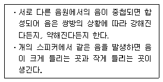
- 음의 간섭
- 음의 굴절
- 음의 반사
- 음의 회절
(정답률: 76%)
116. 전기설비용 시설공간(실)의 계획에 관한 설명으로 옳지 않은 것은?
- 변전실은 부하의 중심에 설치한다.
- 발전기실은 변전실에서 최소 15m 이상 떨어진 위치에 배치한다.
- 변전실은 외부로부터 전력의 수전이 용이한 곳에 설치한다.
- 전기샤프트는 간선의 배선과 점검 ㆍ 유지보수가 용이한 장소로 한다.
(정답률: 73%)
117. 배경소음에 관한 설명으로 옳은 것은?
- 저 주파수 영역에서의 소음
- 고 주파수 영역에서의 소음
- 측정 대상음 이외의 주위 소음
- 어느 장소에서나 일정한 소음
(정답률: 64%)
118. 광도가 1500[cd]인 전등에서 5[m] 거리에 있는 표면에서의 조도는?
- 15[lx]
- 30[lx]
- 60[lx]
- 120[lx]
(정답률: 49%)
119. 타임랙(time-lag)에 관한 설명으로 옳지 않은 것은?
- 건물 외피의 열용량이 클수록 타임랙은 길어진다.
- 실내기온의 변화가 외기온의 변화보다 늦어지는 현상이다.
- 일반적으로 건물 외피를 구성하는 재료의 밀도가 클수록 타임랙은 길어진다.
- 실내외 온도차에 직접적인 영향을 받으며, 온도차가 클수록 타임랙은 길어진다.
(정답률: 43%)
120. 흡음재료의 특성에 관한 설명으로 옳은 것은?
- 다공성 흡음재는 저음역에서의 흡음률이 크다.
- 판진동 흡음재는 일반적으로 두꺼울수록 흡음률이 크다.
- 다공성 흡음재의 흡음성능은 재료의 두께나 공기층두께에 영향을 받지 않는다.
- 판진동 흡음재의 경우, 흡음판을 기밀하게 접착하는 것보다 못으로 고정하여 진동하기 쉽게 하는 것이 흡음성능이 우수하다.
(정답률: 56%)